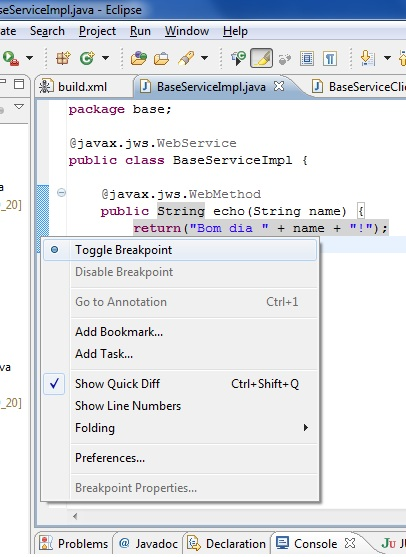

Seleccionar o projecto do web service, "Debug As", "Debug Configurations..."
Na janela de "Debug Configurations", na secção "Source", seleccione "Add..", depois "Java Project", e finalmente o seu projecto. A partir deste momento, o Eclipse saberá onde encontrar o código fonte das classes que forem deployed no JBoss.
Lance o servidor JBoss em modo debug a partir do Eclipse. Certifique-se de que não tem nenhuma outra instância do JBoss em execução. Consulte a FAQ dos laboratórios para correcção de bugs do Eclipse relacionados com a execução do JBoss a partir do Eclipse.
Insira breakpoints no código do seu web service, em pontos do código que queira depurar. (Este passo pode ser feito a qualquer momento, mesmo depois do web service estar instalado (deployed) no JBoss.)

Faça deploy do web service e corra o cliente que invoca serviços do primeiro.
O Eclipse parará a execução quando ela chegar a algum breakpoint.
Com a execução parada, poderá inspeccionar o estado do stack, variáveis, etc e controlar os restantes passos da execução (Resume, Step Into, Step Over, Step Return, Run to Line, etc).